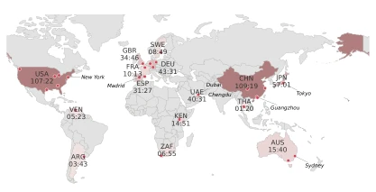
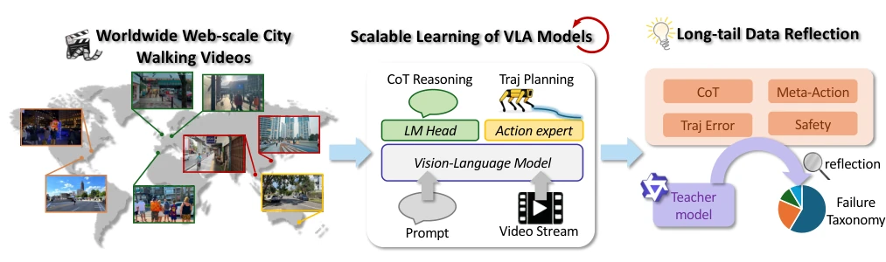
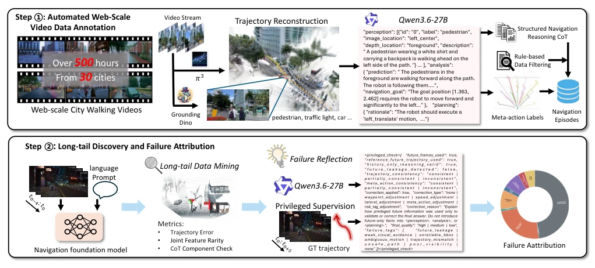
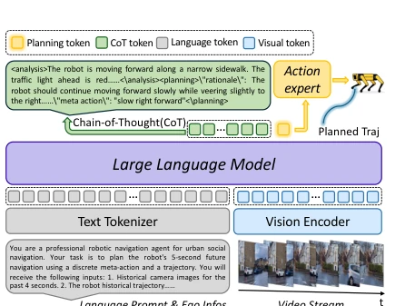
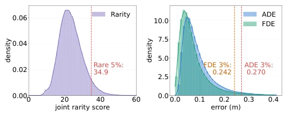
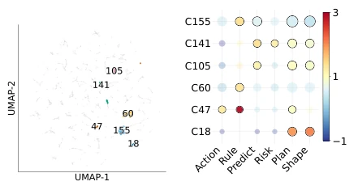
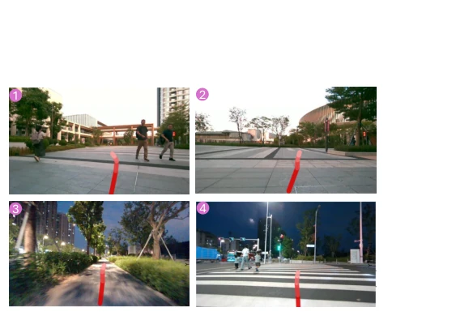

This paper attempts to saturate city navigation models with massive online videos, a rather unconventional approach. WILD-Nav indeed outperforms SocialNav and UrbanNav, particularly the CoT design renders planning interpretable. However, do not rejoice too soon; although 500 hours of videos are substantial, a sim-to-real gap remains for real-world deployment, and the paper acknowledges that errors after fine-tuning still exceed those on the video test set. Most interestingly, the long-tail analysis uses a teacher model to 'open-book exam' diagnose failures; although privileged information was utilized during analysis (privileged), it paves the way for subsequent research. Nevertheless, the long-tail definition relies on model performance, raising suspicions of circular reasoning, and it remains questionable whether the data distribution of 30 cities can truly cover global long-tail scenarios.
研究动机Motivation
具身城市导航面临开放世界挑战，传统方法依赖仿真或有限遥操作数据，覆盖不足 (Bae et al. 2023; Liang et al. 2025)。现有 VLA 模型如 UrbanNav (Mei et al. 2026) 和 SocialNav (Chen et al. 2026) 虽利用网络视频，但缺乏对长尾场景的系统性暴露。CityWalker (Liu et al. 2025) 仅恢复轨迹，缺少推理标注。本文旨在解决数据稀缺与长尾盲区，利用海量 in-the-wild 视频挖掘罕见感知 - 运动模式，填补真实场景覆盖缺口。
Embodied city navigation faces open-world challenges; traditional methods rely on simulation or limited teleoperation data, resulting in insufficient coverage (Bae et al. 2023; Liang et al. 2025). Existing VLA models such as UrbanNav (Mei et al. 2026) and SocialNav (Chen et al. 2026), while utilizing online videos, lack systematic exposure to long-tail scenarios. CityWalker (Liu et al. 2025) only recovers trajectories and lacks reasoning annotations. This paper aims to address data scarcity and long-tail blind spots, leveraging massive in-the-wild videos to mine rare perception-motor patterns and fill coverage gaps in real-world scenarios.

Figure 2: Geographic distribution of our in-the-wild street- walking video collection.
The framework consists of three steps: data construction, model training, and long-tail diagnosis. First, metric trajectories are reconstructed from 500 hours of videos via LoGeR and Pi3X, followed by generating structured CoT annotations (perception-analysis-planning) using Qwen3.6VL-27B. Second, WILD-Nav (Qwen3.5VL-4B) is trained; the visual encoder is frozen, and primitives and trajectories are decoded via the <PLAN_QUERY> head, supporting CoT reasoning. Finally, long-tail is defined based on IDF rarity of perception-motor features and model ADE/FDE difficulty. Privileged reflection (privileged reflection) is introduced, utilizing future information to diagnose failure attribution and mapping errors to reasoning stages.

Figure 1: Overview of the proposed framework for scalable urban navigation VLA models. Our approach first collect worldwide web-scale street-walking videos as the dataset. A VLA model is then trained to perform end-to-end urban navigatioin planning. Finally, the reflection driven by a teacher model is introduced to analyze failure taxonomies.

Figure 3: The two-stage pipeline for automated video processing. Step 1 illustrates the annotation process consisting of Qwen3.6VL-27B and other visual foundation models. Step 2 depicts the long-tail data analysis process. Long-tail samples are defined using distributional rarity and model-dependent trajectory error, and a teacher model performs reflective reasoning for structured failure attribution.

Figure 4: Detailed architecture of the proposed WILD-Nav model. It processes temporal video streams through a vision encoder, while a Large Language Model backbone processes the fused tokens to generate CoT reasoning. Finally, the ac- tion expert decodes the planning token into a trajectory.
Trained on a 500K sample video set, comparing against UrbanNav and SocialNav. WILD-Nav-think shows significantly reduced ADE/FDE on the video test set. Real-world testing reveals large errors in direct transfer; while improved after fine-tuning, a domain gap persists. Long-tail evaluation finds that hard sample fine-tuning improves tail performance but harms overall performance, whereas mixed random samples are optimal. Failure clustering reveals scene-specific failure modes such as dense pedestrians and scooters. A WILD-LongTail benchmark is constructed.

Figure 5: Overview of long-tail discovery through feature rarity and model-dependent difficulty. Left: Distribution of joint perception–motion rarity scores. Right: Distributions of ADE and FDE.

Figure 6: Failure attribution obtained by privileged reflec- tion over the hard set. (a) Visualization of six representa- tive HDBSCAN clusters in the hard set; gray points denote all remaining samples. (b) Cluster-specific reflection failure patterns. Bubble size represents failure support, and color indicates enrichment over the global baseline.

Figure 7: Real-world navigation performance of our VLA model. Our model generates safe and reasonable trajectories (red) for various navigation tasks.